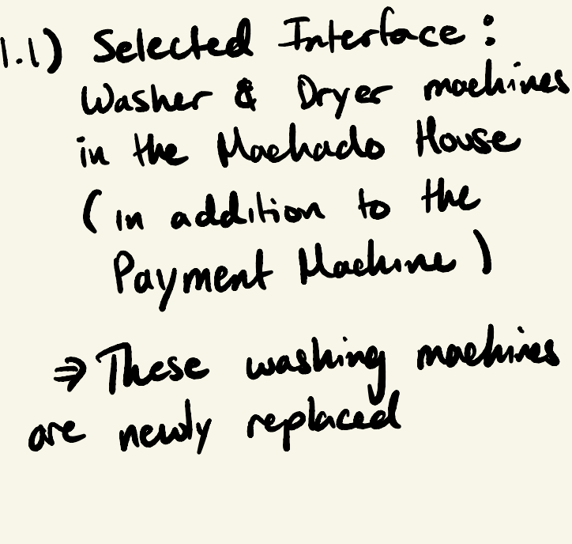

This is my portfolio! This is still in a work-in-progress. Nevertheless this website will deplay the first steps in understanding a user’s experiences. In this assignment we were tasked with observing real users interacting with an interface and interviewing these individuals about their experiences. Furthermore, we were asked to create personas based on these users, and illustrate a storyboard for one of our personas.
The Interface I choose to incorporate for this assignment were the newly installed Washing Machines within Machado House. I choose this due to the range of impressions these new new machines have left on Machado residents.
After spending 10-20 minutes witnessing friends attempt to use the newly installed machines in Machado House I made the follow observations:
This storyboard details Terry's first laundry experience within Machado. Terry is unsure whether he has to pay for laundry and is unfamiliar with the machines in Machado. Terry experienced many errors only to reach the conclusion that laundry is free within Machado--unlike his experience at his previous college.